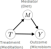

Does mindfulness training affect microbiome? If so, how? In this blog, we motivate and formulate these problems in a causal mediation framework .
Motivation
The gut microbiome refers to the community of bacteria and their genetic material living in the gut.
They have documented relationships with human health and diseases. One with emerging attention is the gut-brain axis: researches have demonstrated the association between microbiota composition and stress / anxiety related behavior.
On the other hand, recent studies exhibit an effect of mindfulness-based intervention on anxiety and depression.
Putting two pieces together, a natural question comes up:
(Q1) Does mindfulness training affect microbiota composition?
Thinking deeper, we may ask:
(Q2) If an effect exists, how does it work? For instance, does mindfulness training affect microbiome by changing people’s diet habits?
The figure below provides an illustration .

Problem Rephrasing
We regard (Q1) as a question for causal effect: How can we quantify the the effect of an treatment (mindfulness training) on the microbita composition?
(Q2) can be viewed within a causal mediation framework: To what extent can we attribute the treatment effect to mediators (e.g., diet)?
In the rest of this blog, we will formulate (Q2) with tools in causal inference, where (Q1) will be automatically included.
Problem Formulation: Causal Mediation Framework
We introduce notations:
\(T\in\{0, 1\}\): treatment indicator variable,
\(Y(t)\in\mathbb{N}^K\): potential taxa count profile with treatment \(t\in\{0,1\}\), and
\(K\): number of taxa.
Then the average treatment effect can be defined as the difference in expected potential outcomes,
\[\begin{align*}
\mathbb{E}[Y(1)] - \mathbb{E}[Y(0)].
\end{align*}\]
For better understanding, mediation analysis adds an intermediate variable (mediator) to the causal path between treatment and outcome.

It splits the treatment effect into two parts:
indirect effect: the effect that works through mediators, and
direct effect: the effect unrelated to mediators.
Let \(M(t')\) be mediators as a function of treatment \(t'\in\{0,1\}\), then the potential outcome becomes a function of both treatment \(T\) and mediator \(M(t')\), denoted by \(Y(t, M(t'))\) .
The average (total) treatment effect becomes
\[\begin{align*}
\mathbb{E}[Y(1, M(1))] - \mathbb{E}[Y(0, M(0))].
\end{align*}\]
In a randomized experiment, we can only observe the outcome where \(t=t'\) being either \(0\) or \(1\).
But conceptually, we can ask What If questions answered by \(Y(t, M(t'))\), even when \(t\not=t'\).
Q: hat if we intervene on mediator only? A: \(Y(0, M(1))\).
Q: What if we intervene with fixed mediator? A: \(Y(1, M(0))\).
We define indirect and direct effects \(\delta(t)\) and \(\tau(t')\) following Imai et al (2010):
\[\begin{align*}
\delta(t) &= \mathbb{E}[Y(t, M(1))] - \mathbb{E}[Y(t, M(0))]\\
\tau(t') &= \mathbb{E}[Y(1, M(t'))] - \mathbb{E}[Y(0, M(t'))]
\end{align*}\]
for \(t, t'\in \{0, 1\}\), where the expectation is taken over \(Y\) given \(t\) or \(t'\).
Further take average over \(t\) and \(t'\), we have the average direct and indirect effects.
\[\begin{align*}
\bar\delta &= \mathbb{E}[\delta(T)]\\
\bar\tau &= \mathbb{E}[\tau(T)].
\end{align*}\]
Our next steps include making proper assumptions, modeling, estimating, and evaluating. Blogs will be posted soon!
Takeaways
We are interested in the causal effect of mindfulness intervention on microbiome, with intermediate variables in between.
The statistical distillation is a causal mediation framework, which is not limited to this data analysis problem.